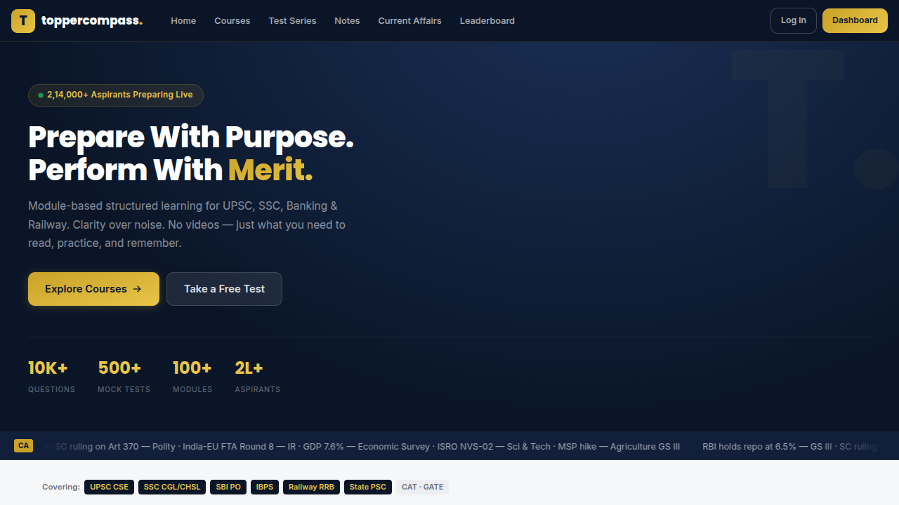
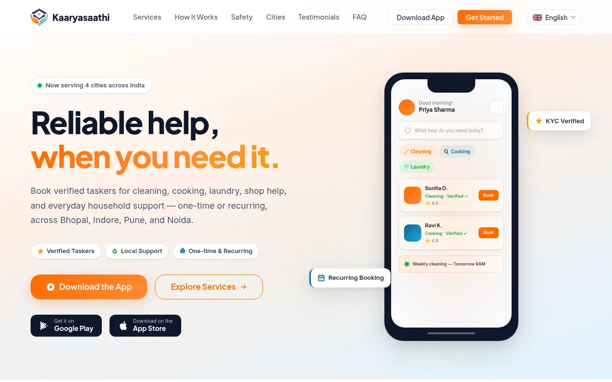
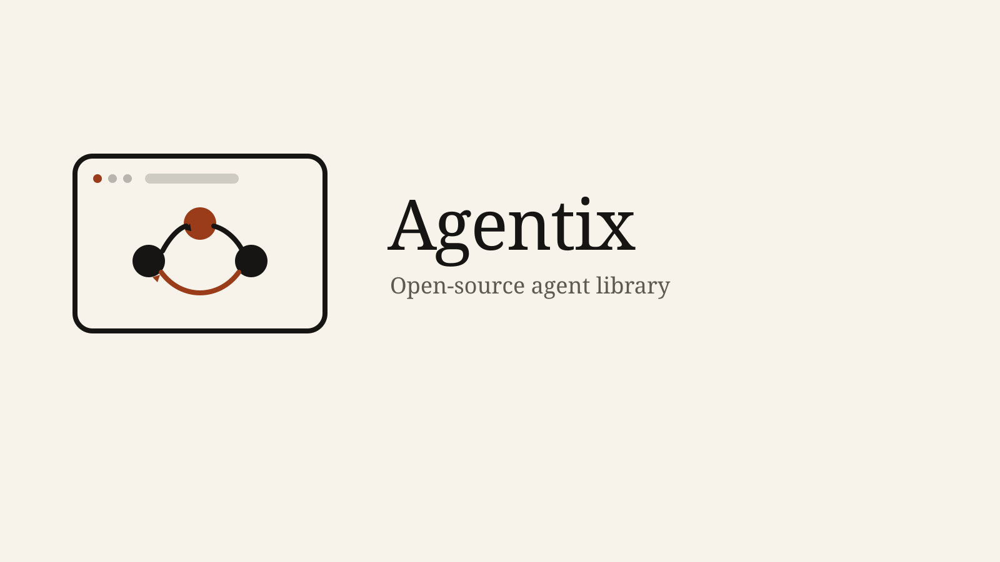
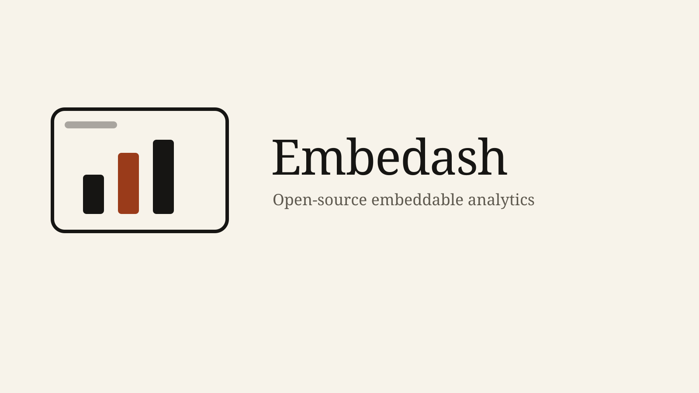

End-to-end ownership
Secondary lead on Admin Center, and full ownership of the pieces I took: the Copilot evaluation harness, platform CI, and the Looker dashboards.
India · Open to roles
Software engineer. Production React, C++ libraries, applied AI, and platform engineering.
The short version
I ship interfaces and the platform around them. Most recently at Zendesk I was secondary lead on moving Admin Center to React, part of unified navigation that reached every account across Support, Explore, and Admin Center. I also worked on Admin Copilot — an agentic assistant for admins — and on the evaluation and CI tooling that kept those changes trustworthy.
Before that, at Persistent Systems, I designed a C++ and OpenCV image-processing library other teams actually called, then migrated a legacy frontend to React 18. The through-line is the same: a careful interface, whether it is a React surface, a Rails framework, or a native API.
B.E. Computer Science, UIT-RGPV. AWS Certified Cloud Practitioner. Based in India.
Where the production work happened.
Admin Center, applied AI, and the platform around both.
A C++ image library, then a React 18 migration.
Same standard on the Zendesk platform work and the C++ library.
Secondary lead on Admin Center, and full ownership of the pieces I took: the Copilot evaluation harness, platform CI, and the Looker dashboards.
Looker for Sales and Legal. Platform support for teams building on the Admin Center framework. The C++ API for the engineers who called it.
Admin Center onto React, as part of unified navigation. A separate legacy frontend onto React 18 at Persistent Systems.
On-call for storage and API-usage issues, and day-to-day support so teams using the framework could actually ship on it.
Notes on the production work.
Secondary lead on the React migration inside unified navigation, on the Zendesk platform team. The slice I owned, and the boundary with the rest of the program.
Read the noteThe evaluation harness that scored recommendation quality before Admin Copilot reached Suite accounts.
Read the noteOpenCV feature detection and preprocessing behind one API at Persistent Systems. Callers did not manage the pipeline’s memory.
Read the noteConcurrent rendering, hooks, and the cross-browser bugs that showed up when a live Persistent Systems frontend moved to React 18.
Read the noteGitHub Actions for the Zendesk platform team, including the PR-description generator and code reviewer that team adopted.
Read the noteLooker dashboards for account and API usage, so Sales and Legal opened the same customer view.
Read the noteSame cards for live products, platform work, and earlier repos.

Exam prep I built for UPSC, SSC, Banking, and Railway. Structured modules, full-length mocks, revision notes, daily current affairs, and a leaderboard. It is also one product where I use the open-source libraries Agentix and Embedash.
toppercompass.com
Part of the team on a managed home-services marketplace. Households book cooking, cleaning, laundry, and general help. They do not pick a worker. Matching, verification, and disputes stay with the product: a client app, a provider app, and an admin panel that assigns the saathi.
kaaryasaathi.com
Open-source TypeScript library for any web app that needs an agent. Tool registration, a bounded multi-step loop, memory, a provider-agnostic model interface, and an evaluation harness, plus a widget and a console. TopperCompass is one product that uses it.

Open-source embeddable analytics. A Rails API, PostgreSQL, and Redis sit behind a React and Recharts dashboard any page can load from a script tag. TopperCompass is one product that embeds it.
Unified navigation for every Zendesk account. I was secondary lead on the Admin Center migration, from the React surface through the framework other product teams build on.
Employer work. No public repo.
An agentic assistant for admins. My piece was the evaluation harness that scored recommendation quality before it reached real accounts, plus CI that drafted PR descriptions and reviewed code for the platform team.
Employer work. No public repo.
Hospital scheduling for doctors and patients.
GitHubLive position of the International Space Station.
GitHubLocations and rain, from a public weather API.
GitHubCurrent public profile and repositories.
github.com/raja-namdeoWhat I use when the work is real.
M.A. SociologyIndira Gandhi National Open University (IGNOU) · 2026 – 2028 · part time
B.E., Computer Science EngineeringUniversity Institute of Technology, RGPV · 2019 – 2023
AWS Certified Cloud PractitionerCLF-C02
Open for the next role.
Frontend, full-stack, or platform engineering. I answer email.